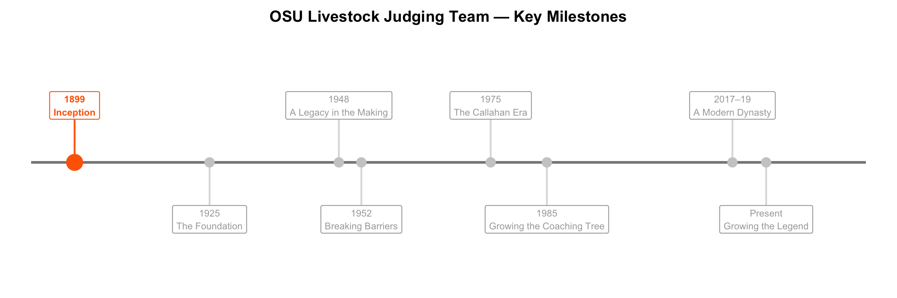
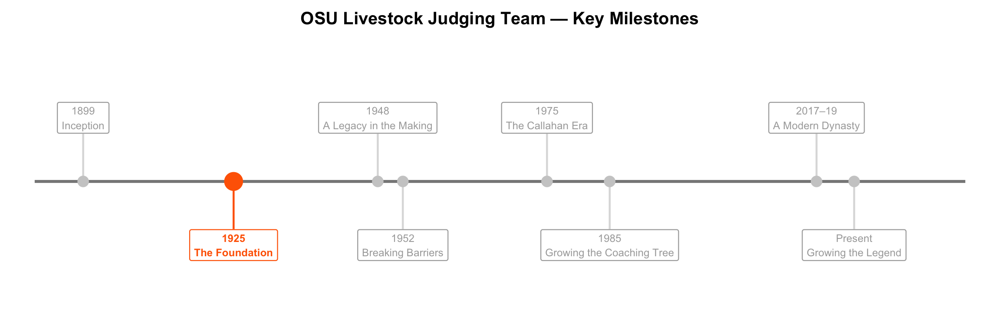
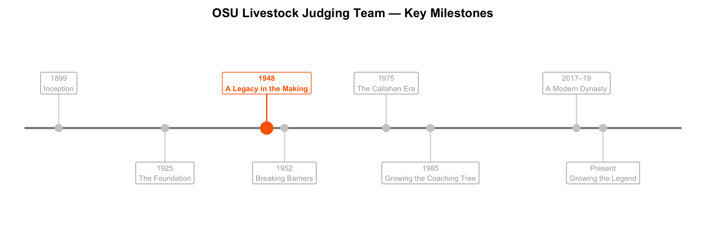
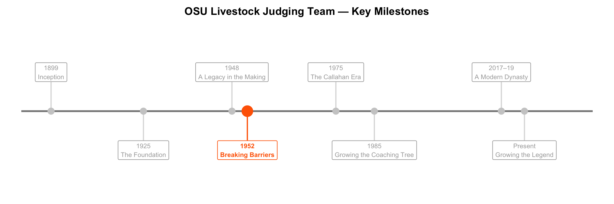
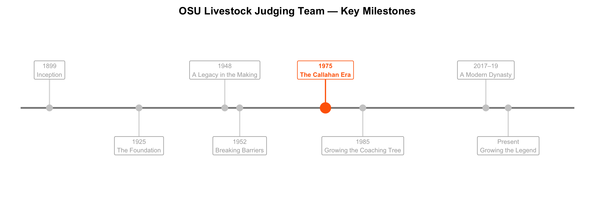
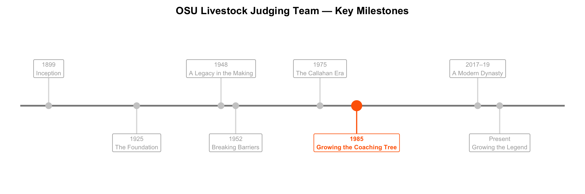
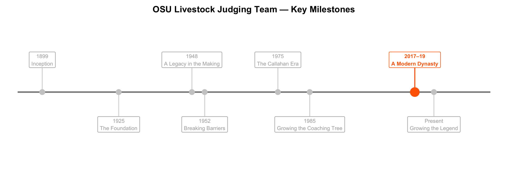
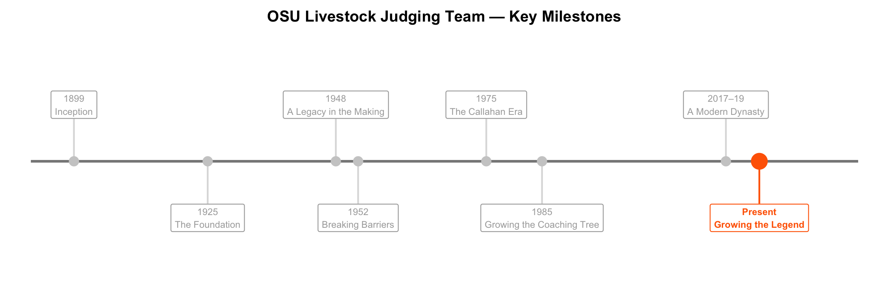

OSU Livestock Judging Team: A Tradition of Excellence
A Dynasty Built Over a Century
Oklahoma State University’s Livestock Judging Team has built one of the most decorated legacies in collegiate livestock judging history. From their earliest national titles to back-to-back-to-back championships in the modern era, the story spans generations of coaches, students, and competitors.
Scroll to explore the key moments that defined the program.
The journey begins in 1899.
Inception
Frank Burtis was a faculty member in the Animal Husbandry Department at then Oklahoma Agricultural and Mechanical College. While introducing the department’s first dairy classes and starting the iconic “Dairy Bar”, Burtis decided to offer a livestock evaluation course in 1899. At the time, much of the livestock housed at the college farms were below breed standards and of poor quality. Burtis recognized this, and acquired literature from registered livestock associations to help teach the course and, eventually, aid in his coaching of the team.
The Foundation
Under the direction of A.E. Darlow and W.L. Blizzard, the university was able to become the 1925 national champion livestock judging team, Oklahoma A&M’s first championship. They followed with national champion teams in 1926 and 1928 which gave permanent ownership of the Union Stock Yard and Transit Co. Trophy to Oklahoma A&M, with the “bronze bull” trophy being retired after a university has won it three times. The bull is still displayed in the Animal Science building today.
A Legacy in the Making
Dr. Robert Totusek was a member of Glen Bratcher’s 1948 national champion team where he finished as the second-high individual at the International. After completing his bachelor’s degree at Oklahoma A&M in 1949, he earned his master’s and Ph.D. in animal nutrition at Purdue University. In 1952, he returned to Oklahoma A&M to join the animal science faculty and coach the livestock judging team. During his eight-year run, He coached 2 national champion teams and 3 reserve national champion teams.
Dr. Totusek then served as department head at the newly renamed Oklahoma State University from 1976 to 1990. During this time, he expanded curriculum in the department, reestablished the horse program, and authored or co-authored more than 200 publications, many being in the field of beef cattle range management. His leadership also initiated the construction of facilities such as the Animal Science Building, Animal Science Arena, Food and Agricultural Products Center, Beef Cattle Research Center, and the Swine Research and Education Center. His legacy embodies a blend of visionary leadership and personal dedication that continues to inspire students, faculty, and livestock producers across the state and beyond.
Breaking Barriers
Minnie Lou Ottinger (later Bradley), a student from Oklahoma A&M College (now Oklahoma State University), became the first woman to be named High Individual at the National Collegiate Livestock Judging Contest in 1952. Her win marked the first time in the 53‑year history of the International Livestock Exposition that a woman earned the top overall title.
The Chicago Tribune featured her accomplishment on the front page of its December 1, 1951 issue. The article described her as a 21‑year‑old student from Hydro, Oklahoma, who outscored more than 180 male competitors. She earned 901 points out of a possible 1,000 to secure the top ranking.
Her achievement represented a major breakthrough for women in animal agriculture and collegiate judging, demonstrating that skill, accuracy, and evaluative ability transcend long‑standing gender barriers.
The Callahan Era
Jarold Callahan was a member of Bob Kropp’s successful 1975 livestock judging team. After graduating in 1976 with a Bachelor’s degree in Animal Science as one of the top seniors in the College of Agriculture, he earned his Master’s degree in Animal Science from the University of Arkansas. After coaching a national champion team alongside Kim Brock in 1981, Callahan served as the head livestock judging coach and assistant professor of animal science at OSU until 1991. This tenure is one of the most successful in the program’s storied history, being highlighted by three consecutive national champion teams in 1989, 1990, and 1991.
He is described as having an exceptional ability to connect with students and develop their talents. Tandem this with his strong work ethic, competitive spirit, and wealth of knowledge and it is hardly surprising that his academic career left a lasting mark on the OSU Department of Animal and Food Sciences. In 1991 he was elected as Executive Vice President of the Oklahoma Cattlemen’s Association, where he continued to influence the cattle industry until his term ended in 1995. Subsequently, he became president of Express Ranches in Yukon, Oklahoma, where he oversaw one of the largest purebred cattle operations in North America for 27 years and helped innovate and shape the future of the seedstock industry.
Callahan was appointed to the Oklahoma A&M Board of Regents in 2016, and he eventually chaired the board from 2022 until his passing. In 2023, he was inducted into the prestigious Saddle and Sirloin Portrait Gallery to recognize his lasting contributions to livestock judging and the beef industry. Callahan’s connection to OSU was multifaceted- student, coach, professor, and regent- and his contributions shaped both the university’s agricultural programs and the cattle industry nationwide.
Growing the Coaching Tree
After a highly successful run with the 1985 Reserve National Champion team coached by Jarold Callahan, Mark Johnson pursued his Master’s degree in Ruminant Nutrition from Oklahoma State followed by his Ph.D. in Animal Breeding and Genetics from Kansas State University in 1992. He joined the faculty at Oklahoma State University, where he still serves to this day. His tenure as coach of the livestock judging team reached unprecedented heights for the program. He coached four national champion teams in 2001, 2005, 2010, and 2012, while coaching four reserve national champion teams in 1992,1993,1994 and 2004. His 2005 national champion team still holds the record for the all-time highest score in the history of the contest.
His accomplishments earned him recognition with receiving the Coach of the Year Award seven times. From 1992-2013, his teams were either Champion or Reserve Champion team in 70% of the contests in which they competed. He has also managed the OSU Purebred Beef Cattle Center and been a valuable educator in the Department of Animal Science since 1992, specializing in courses involving animal breeding and beef cattle management.
A Modern Dynasty
After earning a Bachelor’s degree in animal science and a Master’s degree in reproductive physiology from Texas A&M, Dr. Blake Bloomberg came to OSU to pursue a Ph.D. in animal science while coaching the livestock judging team. Under his leadership, OSU continued their dominant run with 3 consecutive national champion teams in 2017, 2018, and 2019. He also coached 4 high individuals, with Bloomberg being named Coach of the Year in every year he coached at OSU.
Growing the Legend
After earning his doctorate, the open coaching position at Oklahoma State University proved to enticing for Dr. Parker Henley to pass up. Henley is currently the livestock judging team coach and Dr. Robert “Bob” Totusek Endowed Chair Fellow while also serving as an extension specialist focused in beef cattle management and youth livestock selectionand education. His short time coaching at the university has brought unprecedented success. Through 5 years, he has coached 4 national champion teams, 1 reserve national champion team, and 2 high individuals at the National Collegiate Livestock Judging Contest.






